[1] 2Análisis del Precio del Oro
Dirección de Comercialización de Oro – BCE
1 Prueba
Prueba de Quarto del Banco Central del Ecuador Ghule et al. (2022)
prueba 1
prueba 2
prueba 3

Código
library(tidyverse)
library(gt)
library(quantmod)
library(tidyquant)
library(TTR)
library(zoo)
library(lubridate)
# Valor por defecto de params si alguien ejecuta sin YAML/CLI
if (!exists("params") || is.null(params$fecha_corte)) {
params <- list(fecha_corte = "2024-12-31")
}
# Rutas candidatas (si este .qmd vive en reports/)
candidatas <- c("data/gold_dataset_monthly.rds",
"../data/gold_dataset_monthly.rds",
"../../data/gold_dataset_monthly.rds")
ruta <- candidatas[file.exists(candidatas)][1]
if (is.na(ruta)) stop("No se encontró gold_dataset_monthly.rds en data/, ../data/ o ../../data/")
d <- readr::read_rds(ruta)
# Aplicar parámetro de fecha
fecha_corte <- as.Date(params$fecha_corte)
d <- d |> filter(date <= fecha_corte)
# Helper de formato
fmt_usd <- function(tbl, cols) {
tbl |> fmt_currency(columns = {{ cols }}, currency = "USD")
}
# Helpers de formato (usa sep_mark en lugar de thousands_sep)
fmt_num <- function(tbl, columns, dec = 2) {
gt::fmt_number(
data = tbl,
columns = {{ columns }},
decimals = dec,
dec_mark = ",",
sep_mark = "."
)
}
fmt_usd <- function(tbl, columns, dec = 2) {
gt::fmt_currency(
data = tbl,
columns = {{ columns }},
currency = "USD",
decimals = dec,
dec_mark = ",",
sep_mark = "."
)
}| Oro: últimos 12 meses | |
|---|---|
| date | GOLD |
| 2023-08-01 | $1.918,52 |
| 2023-09-01 | $1.913,71 |
| 2023-11-01 | $1.985,07 |
| 2023-12-01 | $2.033,55 |
| 2024-02-01 | $2.026,54 |
| 2024-03-01 | $2.158,30 |
| 2024-04-01 | $2.328,41 |
| 2024-05-01 | $2.347,47 |
| 2024-07-01 | $2.390,48 |
| 2024-08-01 | $2.465,85 |
| 2024-10-01 | $2.688,00 |
| 2024-11-01 | $2.654,04 |
2 Gráfico
Código
d %>%
ggplot(aes(date,GOLD))+
geom_line(linewidth=0.8)+
labs(x=NULL, y= "USD/oz", title = "Evolución mensual del precio del oro (USD)",
subtitle= "2006-presente",
caption="Fuente: Yahoo Finance")+
theme_minimal()+
theme(
plot.title = element_text(hjust = 0.5, size = 14, face = "bold"),
plot.subtitle = element_text(hjust = 0.5, size = 12, face = "italic"),
plot.caption = element_text(hjust = 0.5, size = 9)
)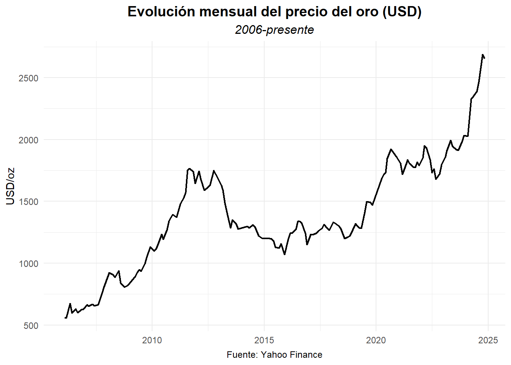
Tabla
Código
d |> select(date,GOLD) %>%
tail(12) %>%
gt() %>%
cols_label(
date="Fecha",
GOLD="Precio Oro (USD)/oz"
) %>%
tab_header(title = "Oro: últimos 12 meses") %>%
fmt_usd(columns = GOLD) %>%
tab_source_note(
source_note = "Fuente:FED"
)| Oro: últimos 12 meses | |
|---|---|
| Fecha | Precio Oro (USD)/oz |
| 2023-08-01 | $1.918,52 |
| 2023-09-01 | $1.913,71 |
| 2023-11-01 | $1.985,07 |
| 2023-12-01 | $2.033,55 |
| 2024-02-01 | $2.026,54 |
| 2024-03-01 | $2.158,30 |
| 2024-04-01 | $2.328,41 |
| 2024-05-01 | $2.347,47 |
| 2024-07-01 | $2.390,48 |
| 2024-08-01 | $2.465,85 |
| 2024-10-01 | $2.688,00 |
| 2024-11-01 | $2.654,04 |
| Fuente:FED | |
3 UNIDAD 2. INTRODUCCIÓN A MACHINE LEARNING: REGRESIÓN LINEAL

3.1 Machine Learning
¿En donde podemos aplicar Machine Learning (ML)?
4 UNIDAD 3. Creación de un flujo de trabajo de Machine Learning (ML)
4.1 Introducción a la regresión lineal en R-lm
La regresión lineal es un modelo estadístico y de machine learning supervisado que se utiliza para explicar y predecir una variable dependiente (también llamada variable respuesta o Y) a partir de una o varias variables independientes (también llamadas regresores, predictores o X).
La idea central es ajustar una línea recta (o hiperplano en dimensiones mayores) que relacione los valores de X con los de Y, minimizando la diferencia entre los valores observados y los predichos.
Forma matemática
Para una regresión lineal simple (con una sola variable (X)):
\(Y_i = \beta_0 + \beta_1 X_i + \varepsilon_i\)
- \(Y_i\): Variable dependiente (lo que queremos explicar).
- \(X_i\): Variable independiente (el predictor).
- \(\beta_0\): Intercepto (valor de \(Y\) cuando \(X=0\)).
- \(\beta_1\): Pendiente (cambio promedio en \(Y\) por cada unidad adicional de \(X\)).
- \(\varepsilon_i\): término de error (factores no observados).
En la regresión múltiple (con varios predictores):
\(Y_i = \beta_0 + \beta_1 X_{1i} + \beta_2 X_{2i} + \dots + \beta_k X_{ki} + \varepsilon_i\)
¿Cómo se estima?
Se utiliza el método de Mínimos Cuadrados Ordinarios (MCO / OLS, por sus siglas en inglés), que busca los valores de los coeficiente que minimizan la suma de los errores al cuadrado:
\(\min_{\beta} \sum_{i=1}^{n} (Y_i - \hat{Y}_i)^2\)
Interpretación
El modelo explica la relación promedio lineal entre \(Y\) y las variables \(X\).
Los coeficientes $\beta$ representan el efecto marginal de cada variable independiente sobre \(Y\),manteniendo las demás constante.
El \(R^2\) mide el porcentaje de la variabilidad de \(Y\) explicado por el modelo.
Ejemplo intuitivo
Si \(Y\)= ingreso mensual y \(X\) años de educación
\(Ingreso\) = \(\beta_0\)+\(\beta_1\)x \(Educación\)+\(\varepsilon_i\)
\(\beta_0\): Ingreso esperado si la educación = \(0\)
\(\beta_1\): Cuanto aumenta (en promedio) el ingreso por cada año adicional de educación.
En Resumen
Un modelo estadístico y predictivo.
Busca una relación lineal entre variables
Se estima normalmente con mínimos cuadrados.
Es una de las herramientas más usadas en estadística, econometría y machine learning.
¡Vamos a la practica!
Observamos la gráfica del oro
Código
plot(d$date, d$GOLD,
type = "l", # "l" = line
col = "blue",
lwd = 2, # grosor de la línea
xlab = "Fecha",
ylab = "Valor Oro en niveles",
main = "Evolución del oro en niveles")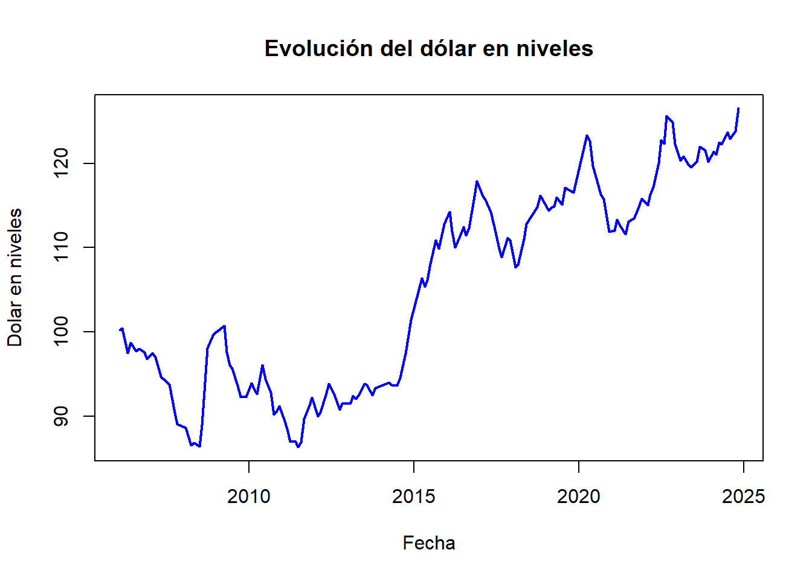
Observamos la gráfica del dólar
Código
plot(d$date, d$DOLLAR,
type = "l", # "l" = line
col = "blue",
lwd = 2, # grosor de la línea
xlab = "Fecha",
ylab = "Dolar en niveles",
main = "Evolución del dólar en niveles")Retornos en gráficos: Oro
Código
plot(d$date, d$gold_ret,
type = "l", # "l" = line
col = "blue",
lwd = 2, # grosor de la línea
xlab = "Fecha",
ylab = "Retorno del oro",
main = "Evolución del retorno del oro")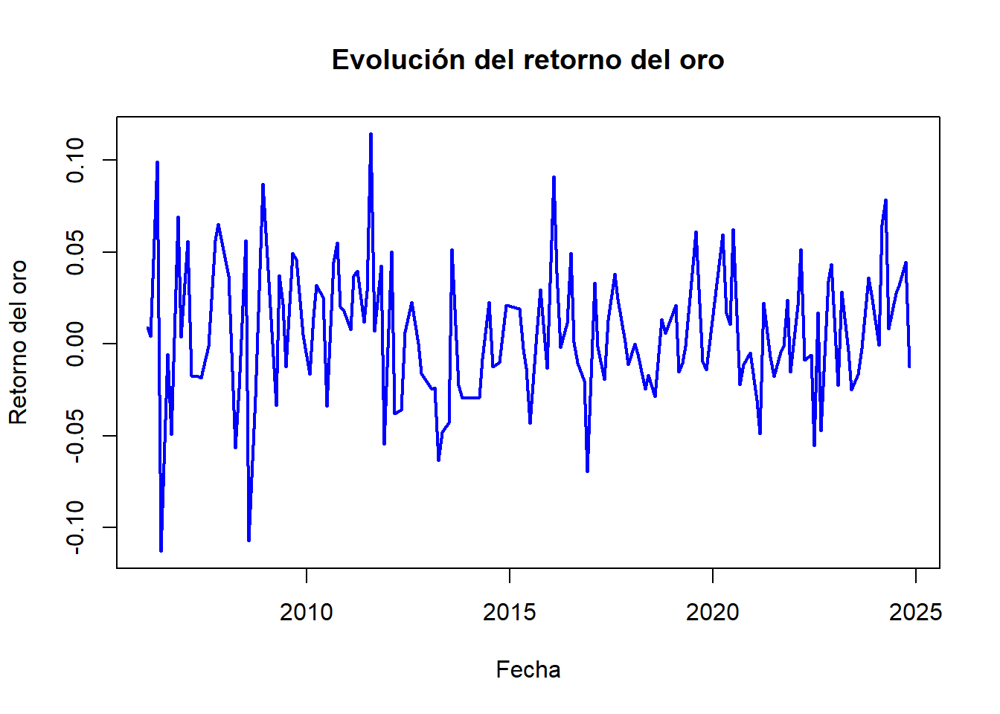
Retornos en gráficos: Dolar
Código
plot(d$date, d$dollar_ret,
type = "l", # "l" = line
col = "blue",
lwd = 2, # grosor de la línea
xlab = "Fecha",
ylab = "Retorno del dólar",
main = "Evolución del retorno del dólar")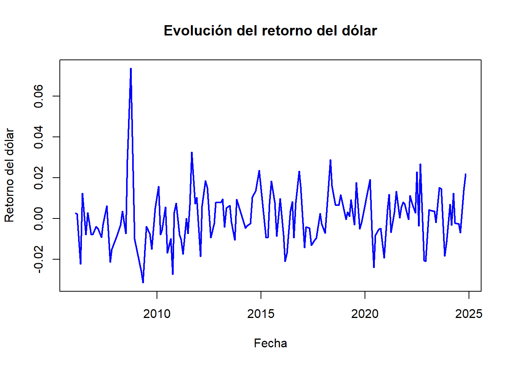
Código
s1 <- d |>
select(date, gold_ret, dollar_ret) |>
drop_na()
print(s1)# A tibble: 148 × 3
date gold_ret dollar_ret
<date> <dbl> <dbl>
1 2006-02-01 0.00898 0.00274
2 2006-03-01 0.00433 0.00223
3 2006-05-01 0.0995 -0.0222
4 2006-06-01 -0.113 0.0123
5 2006-08-01 -0.00576 -0.00780
6 2006-09-01 -0.0495 0.00274
7 2006-11-01 0.0694 -0.00791
8 2006-12-01 0.00379 -0.00779
9 2007-02-01 0.0559 -0.00384
10 2007-03-01 -0.0175 -0.00494
# ℹ 138 more rowsCódigo
regresion <- lm(gold_ret ~ dollar_ret, data = s1)
summary(regresion)
Call:
lm(formula = gold_ret ~ dollar_ret, data = s1)
Residuals:
Min 1Q Median 3Q Max
-0.106215 -0.021778 -0.001336 0.017674 0.115190
Coefficients:
Estimate Std. Error t value Pr(>|t|)
(Intercept) 0.006652 0.002804 2.372 0.019 *
dollar_ret -1.091295 0.206016 -5.297 4.25e-07 ***
---
Signif. codes: 0 '***' 0.001 '**' 0.01 '*' 0.05 '.' 0.1 ' ' 1
Residual standard error: 0.03408 on 146 degrees of freedom
Multiple R-squared: 0.1612, Adjusted R-squared: 0.1555
F-statistic: 28.06 on 1 and 146 DF, p-value: 4.246e-07Interpretemos
\[ gold\_ret_{t} = 0.006652 - 1.0913 \cdot dollar\_ret_{t} + \varepsilon_{t} \]
Coeficientes
Intercepto: \((0.006652,\; p=0.019)\)
Cuando el retorno del dólar es cero, el retorno promedio del oro es aproximadamente \(0.66\%\).
Es significativo al \(5\%\) (\(p < 0.05\)).Pediente: \((-1.0913,\; p < 0.001)\)
Por cada incremento de \(1\) unidad en el retorno del dólar, el retorno del oro disminuye en promedio \(1.09\) unidades.
Es altamente significativo (\(p \approx 0.000000425\)).
El signo negativo confirma la teoría: la apreciación del dólar tiende a reducir el precio del oro.
Coeficientes
Intercepto \((0.006652,\; p=0.019)\)
Cuando el retorno del dólar es cero:
\[ \hat{Y} = 0.006652 \]
El retorno promedio del oro es ≈ \(0.66\%\).
Es significativo al \(5\%\) (\(p < 0.05\)).
Pendiente \((-1.0913,\; p < 0.001)\)
Por cada incremento de \(1\) unidad en el retorno del dólar:
\[ \Delta gold\_ret = -1.0913 \cdot \Delta dollar\_ret \]
El retorno del oro disminuye en promedio \(1.09\) unidades.
Es altamente significativo (\(p \approx 0.000000425\)).
El signo negativo confirma la teoría: la apreciación del dólar tiende a reducir el precio del oro.
🔹 Bondad de ajuste
\[ R^2 = 0.1612 \quad (16.1\%) \]
El modelo explica solo un \(16\%\) de la variación en el retorno del oro.
Esto es común en series financieras: el oro depende de múltiples factores, no solo del dólar.
\[ R^2_{ajustado} = 0.155 \]
Confirma que la complejidad no añade mucha pérdida.
Error estándar residual:
\[ \sigma_{\hat{\varepsilon}} = 0.03408 \]
En promedio, los residuos (errores) son de \(3.4\) puntos porcentuales.
🔹 Pruebas de significancia global
\[ F = 28.06, \quad p < 0.001 \]
El modelo en su conjunto es estadísticamente significativo.
Al menos un coeficiente (aquí \(\beta_1\)) difiere de cero.
🔹 Resumen interpretativo
- Dirección: relación negativa clara entre dólar y oro.
- Magnitud: movimientos del dólar tienen un efecto importante en el oro.
- Significancia: el efecto es estadísticamente robusto.
- Limitación: el modelo explica solo una fracción pequeña de la variación (\(16\%\)).
📊 Conclusión
La regresión simple muestra evidencia sólida de que el dólar influye en el oro de forma negativa.
Sin embargo, la baja capacidad predictiva (\(R^2\) bajo) implica que se necesitan otros factores (petróleo, tasas de interés, inflación, shocks geopolíticos) para construir un modelo predictivo más fuerte.
Cuadro resumen
Código
library(gt)
#| label: simple-lm
lm_s <- lm(gold_ret ~ dollar_ret, data = s1)
broom::tidy(lm_s, conf.int = TRUE) |>
gt() |>
tab_header(title = "OLS (simple): coeficientes e IC 95%") |>
fmt_num(c(estimate, std.error, statistic, p.value, conf.low, conf.high), dec = 6)| OLS (simple): coeficientes e IC 95% | ||||||
|---|---|---|---|---|---|---|
| term | estimate | std.error | statistic | p.value | conf.low | conf.high |
| (Intercept) | 0,006652 | 0,002804 | 2,371849 | 0,019004 | 0,001109 | 0,012194 |
| dollar_ret | −1,091295 | 0,206016 | −5,297149 | 0,000000 | −1,498453 | −0,684137 |
Un cuadro mas completo
Código
library(gt)
resumen <- broom::tidy(lm_s, conf.int = TRUE) |>
mutate(
sig = case_when(
p.value < 0.01 ~ "***",
p.value < 0.05 ~ "**",
p.value < 0.1 ~ "*",
TRUE ~ ""
),
interpretacion = c(
"Cuando el retorno del dólar es 0, el oro sube ≈ 0.66% en promedio",
"Un aumento de 1% en el retorno del dólar reduce el retorno del oro en ≈ 1.09%"
)
)
gt(resumen) |>
fmt_number(columns = c(estimate, std.error, statistic, p.value, conf.low, conf.high),
decimals = 6, dec_mark = ",", sep_mark = ".") |>
tab_header(title = "OLS (simple): coeficientes e interpretación") |>
cols_label(
term = "Variable",
estimate = "Estimador",
std.error = "Error Est.",
statistic = "t",
p.value = "p-valor",
conf.low = "IC 95% (Inf)",
conf.high = "IC 95% (Sup)",
sig = "Sig.",
interpretacion = "Interpretación"
)| OLS (simple): coeficientes e interpretación | ||||||||
|---|---|---|---|---|---|---|---|---|
| Variable | Estimador | Error Est. | t | p-valor | IC 95% (Inf) | IC 95% (Sup) | Sig. | Interpretación |
| (Intercept) | 0,006652 | 0,002804 | 2,371849 | 0,019004 | 0,001109 | 0,012194 | ** | Cuando el retorno del dólar es 0, el oro sube ≈ 0.66% en promedio |
| dollar_ret | −1,091295 | 0,206016 | −5,297149 | 0,000000 | −1,498453 | −0,684137 | *** | Un aumento de 1% en el retorno del dólar reduce el retorno del oro en ≈ 1.09% |
¿Cómo se ve gráficamente esta relación lineal?
Código
# Gráfico de dispersión correcto
plot(d$dollar_ret, d$gold_ret,
main = "Regresión lineal: Oro vs Dólar",
xlab = "Rendimiento del dólar",
ylab = "Rendimiento del oro",
pch = 19, col = "darkgray")
# Modelo consistente
modelo <- lm(gold_ret ~ dollar_ret, data = d)
# Línea de regresión
abline(modelo, col = "blue", lwd = 2)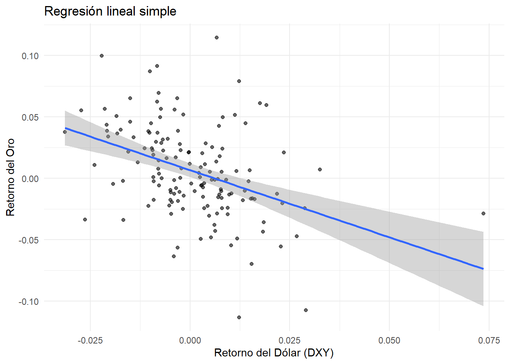
Gráfico con ggplot
Código
s1 |> ggplot(aes(dollar_ret, gold_ret)) +
geom_point(alpha = 0.6) +
geom_smooth(method = "lm", se = TRUE, linewidth = 0.9) +
labs(x = "Retorno del Dólar (DXY)", y = "Retorno del Oro", title = "Regresión lineal simple") +
theme_minimal()Diagnostico predictivo inicial
Código
library(broom)Warning: package 'broom' was built under R version 4.4.3Código
library(gt)
# Ajuste del modelo
lm_s <- lm(gold_ret ~ dollar_ret, data = d)
# Resumen del modelo
glance_tbl <- broom::glance(lm_s)
# Tabla con formateo
glance_tbl %>%
gt() %>%
tab_header(title = "Diagnóstico global (R², F, σ, AIC/BIC)") %>%
fmt_number(
columns = c(r.squared, adj.r.squared, sigma, statistic, p.value, AIC, BIC, logLik, deviance),
decimals = 6,
dec_mark = ",",
sep_mark = "."
)| Diagnóstico global (R², F, σ, AIC/BIC) | |||||||||||
|---|---|---|---|---|---|---|---|---|---|---|---|
| r.squared | adj.r.squared | sigma | statistic | p.value | df | logLik | AIC | BIC | deviance | df.residual | nobs |
| 0,161208 | 0,155463 | 0,034085 | 28,059791 | 0,000000 | 1 | 291,080891 | −576,161781 | −567,170145 | 0,169621 | 146 | 148 |
| Estadístico | Valor | Interpretación |
|---|---|---|
| R² | 0.161 | El modelo explica el 16.1% de la variación en el retorno del oro a partir del retorno del dólar. |
| R² ajustado | 0.155 | Similar al R², ajusta por el número de predictores. Confirma que el modelo no está sobreajustado. |
| σ (residual standard error) | 0.0341 | El error típico de los residuos es ≈ 3.4 puntos porcentuales en los retornos del oro. Indica la magnitud del error de predicción. |
| F (statistic) | 28.06 | Prueba de significancia global: el modelo como conjunto es significativo. |
| p-value (modelo) | < 0.0001 | Muy fuerte evidencia de que al menos un coeficiente (el retorno del dólar) explica parte de la variación en el oro. |
| df (grados de libertad regresor) | 1 | Solo hay un predictor (dollar_ret). |
| df.residual | 146 | Grados de libertad de los residuos (n - k - 1). |
| nobs | 148 | Observaciones efectivas utilizadas. |
| LogLik | 291.08 | Valor de la función de verosimilitud. Base para comparar modelos. |
| AIC | -576.16 | Criterio de Akaike: más bajo indica mejor ajuste relativo. |
| BIC | -567.17 | Criterio de Bayes: penaliza más por complejidad, útil en comparación de modelos. |
| Deviance | 0.1696 | Suma de residuos al cuadrado (varianza no explicada). |
4.2 Supuestos de OLS y diagnósticos
Linealidad: Este supuesto implica que la relación entre las variables independientes y la variable dependiente debe ser lineal. Si la relación es no lineal, los resultados de la regresión (lineal) pueden ser poco confiables y conducir a interpretaciones erróneas sobre la relación entre las variables.
Normalidad: El supuesto de normalidad establece que los errores de la regresión deben seguir una distribución normal. ¡Cuidado con esto!, los errores, no las variables. Cuando este supuesto se cumple, las pruebas de hipótesis y los intervalos de confianza pueden interpretarse con mayor precisión. Si la normalidad no se cumple, los intervalos de confianza y las pruebas de hipótesis pueden verse afectados, lo que puede conducir a conclusiones erróneas.
Homocedasticidad: Este supuesto implica que la varianza de los errores debe ser constante en todos los niveles de las variables predictoras. Cuando se viola este supuesto, se produce heterocedasticidad, lo que significa que la dispersión de los errores varía en diferentes rangos de las variables predictoras. La presencia de heterocedasticidad puede distorsionar los intervalos de confianza y los valores p-value, lo que puede afectar la precisión de las pruebas de hipótesis.
Independencia: El supuesto de independencia indica que los errores de la regresión no deben estar correlacionados entre sí. Si hay autocorrelación presente, puede afectar la precisión de los coeficientes y las pruebas de hipótesis, lo que lleva a conclusiones erróneas sobre la importancia de las variables predictoras. ¿Qué es la autocorrelación? la presencia de autocorrelación en los residuos indica que los errores del modelo muestran cierto patrón sistemático en su distribución a lo largo del tiempo. Recordad que los errores o residuos de un modelo de regresión deberían distribuirse de manera aleatoria y seguir una distribución normal con media cero y varianza constante.
Código
aug <- broom::augment(lm_s)
aug |>
ggplot(aes(.fitted, .resid)) +
geom_hline(yintercept = 0, linetype = 2, color="gray50") +
geom_point(alpha = 0.6) +
labs(x="Ajustados", y="Residuos") + theme_minimal()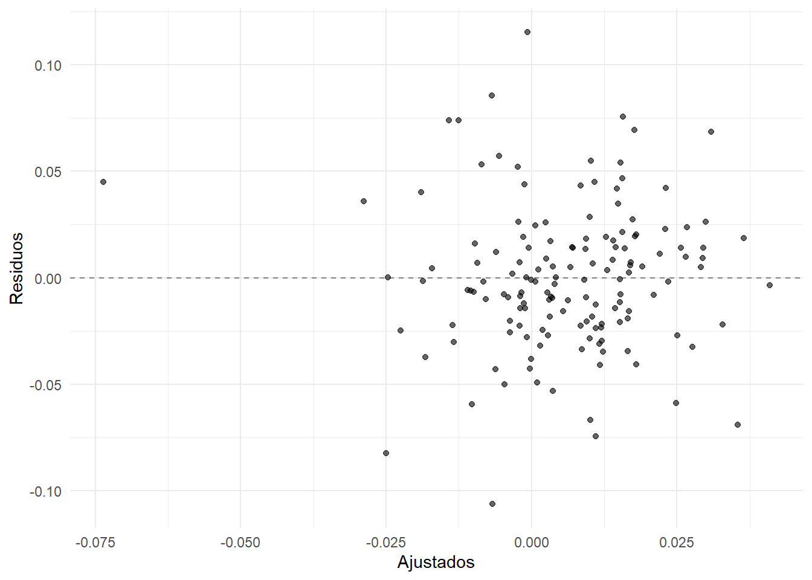
4.3 1. Gráfico de Residuos vs. Ajustados
Qué muestra:
En el eje X están los valores ajustados (predichos por el modelo)
En el eje Y están los residuos (diferencia entre observado y predicho).
Interpretación:
La nube de puntos parece estar dispersa alrededor de la línea horizontal 0, sin un patrón claro.
Esto es bueno: sugiere que no hay heterocedasticidad fuerte ni relación sistemática no captada por el modelo.
Si vieras una forma de “abanico” (residuos más grandes a medida que crece el ajustado) o una curva, eso indicaría problemas como heterocedasticidad o falta de linealidad.
Uso en clase: sirve para explicar la verificación de dos supuestos:
La varianza constante de los errores (homocedasticidad).
Que el modelo capta la relación lineal y no deja un patrón estructurado en los residuos.
Código
qq <- qqnorm(resid(lm_s), plot.it = FALSE)
tibble(x = qq$x, y = qq$y) |>
ggplot(aes(x, y)) +
geom_abline(slope = 1, intercept = 0, color="gray50") +
geom_point(alpha = 0.6) + theme_minimal() +
labs(x="Teórico", y="Muestral")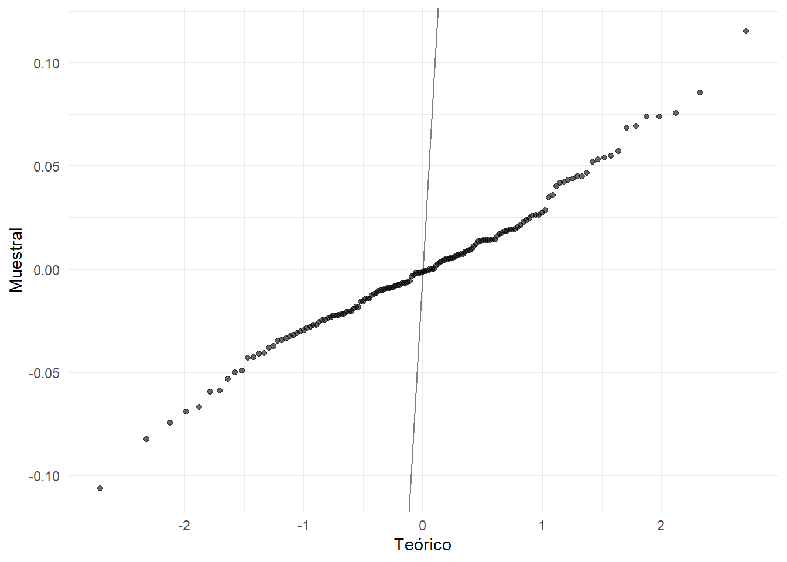
Compara la distribución de los residuos del modelo con la distribución normal teórica.
La mayoría de los puntos sigue la línea diagonal gris, lo que indica que los residuos son aproximadamente normales.
Código
# Pruebas formales
dw <- lmtest::dwtest(lm_s) # autocorrelación
bp <- lmtest::bptest(lm_s) # heterocedasticidad (Breusch–Pagan)
sh <- shapiro.test(resid(lm_s)) # normalidad (muestras pequeñas)
tibble(
prueba = c("Durbin–Watson", "Breusch–Pagan", "Shapiro–Wilk"),
estadistico = c(dw$statistic, bp$statistic, sh$statistic),
p_value = c(dw$p.value, bp$p.value, sh$p.value)
) |>
gt() |> tab_header(title = "Pruebas de supuestos (simple)") |>
fmt_num(c(estadistico, p_value), dec = 6)| Pruebas de supuestos (simple) | ||
|---|---|---|
| prueba | estadistico | p_value |
| Durbin–Watson | 1,989843 | 0,467587 |
| Breusch–Pagan | 2,303729 | 0,129064 |
| Shapiro–Wilk | 0,985118 | 0,111643 |
Código
d# A tibble: 148 × 16
date GOLD DOLLAR WTI FEDFUNDS CPI gold_ret dollar_ret wti_ret
<date> <dbl> <dbl> <dbl> <dbl> <dbl> <dbl> <dbl> <dbl>
1 2006-02-01 556. 100. 61.6 4.49 199. 0.00898 0.00274 -0.0589
2 2006-03-01 558. 100. 62.7 4.59 200. 0.00433 0.00223 0.0171
3 2006-05-01 673. 97.5 70.8 4.94 201. 0.0995 -0.0222 0.0202
4 2006-06-01 597. 98.7 71.0 4.99 202. -0.113 0.0123 0.00151
5 2006-08-01 631. 97.7 73.0 5.25 204. -0.00576 -0.00780 -0.0184
6 2006-09-01 600. 98.0 63.8 5.25 203. -0.0495 0.00274 -0.127
7 2006-11-01 626. 97.5 59.0 5.25 202 0.0694 -0.00791 0.00213
8 2006-12-01 629. 96.8 62.0 5.24 203. 0.00379 -0.00779 0.0498
9 2007-02-01 666. 97.5 59.3 5.26 204. 0.0559 -0.00384 0.0876
10 2007-03-01 654. 97.0 60.4 5.26 205. -0.0175 -0.00494 0.0196
# ℹ 138 more rows
# ℹ 7 more variables: infl_yoy <dbl>, gold_next <dbl>, gold_next_ret <dbl>,
# up_next <fct>, ma6 <dbl>, ma12 <dbl>, rsi14 <dbl>Durbin Watson
Hipótesis
Ho: No hay autocorrelación en los residuos
H1: Existe autocorrelación (+ o -)
El estadístico DW ≈ 2 (ideal, indica independencia).
Como p-valor > 0.05, no rechazamos H₀ → no hay evidencia de autocorrelación en los residuos.
Breusch–Pagan
Ho: Los residuos son homocedásticos (varianza constante)
H1: Los residuos son heterocedásticos (varianza no constante)
p-valor > 0.05, no rechazamos H₀ → no hay evidencia de heterocedasticidad significativa.
Shapiro–Wilk (normalidad de residuos)
Ho: Los residuos siguen una distribución normal
H1: Los residuos no siguen una distribución normal
p-valor > 0.05, no rechazamos H₀ → los residuos pueden considerarse aproximadamente normales.
Comentario
En series de tiempo, la autocorrelación y heterocedasticidad son frecuentes. Lo importante es reportarlo y pasar a un flujo robusto fuera de muestra.
4.4 Análisis Eploratorio de Datos (EDA)
Código
library(tidymodels)Warning: package 'tidymodels' was built under R version 4.4.3── Attaching packages ────────────────────────────────────── tidymodels 1.3.0 ──✔ dials 1.4.1 ✔ rsample 1.3.1
✔ infer 1.0.9 ✔ tune 1.3.0
✔ modeldata 1.5.1 ✔ workflows 1.3.0
✔ parsnip 1.3.2 ✔ workflowsets 1.1.1
✔ recipes 1.3.1 ✔ yardstick 1.3.2Warning: package 'dials' was built under R version 4.4.3Warning: package 'scales' was built under R version 4.4.3Warning: package 'infer' was built under R version 4.4.3Warning: package 'modeldata' was built under R version 4.4.3Warning: package 'parsnip' was built under R version 4.4.3Warning: package 'recipes' was built under R version 4.4.3Warning: package 'rsample' was built under R version 4.4.3Warning: package 'tune' was built under R version 4.4.3Warning: package 'workflowsets' was built under R version 4.4.3Warning: package 'yardstick' was built under R version 4.4.3── Conflicts ───────────────────────────────────────── tidymodels_conflicts() ──
✖ scales::discard() masks purrr::discard()
✖ dplyr::filter() masks stats::filter()
✖ xts::first() masks dplyr::first()
✖ recipes::fixed() masks stringr::fixed()
✖ dplyr::lag() masks stats::lag()
✖ xts::last() masks dplyr::last()
✖ dials::momentum() masks TTR::momentum()
✖ yardstick::spec() masks readr::spec()
✖ recipes::step() masks stats::step()Código
library(tidyverse)
library(skimr)Warning: package 'skimr' was built under R version 4.4.3Código
library(DataExplorer)Warning: package 'DataExplorer' was built under R version 4.4.3Código
library(ggpubr)Warning: package 'ggpubr' was built under R version 4.4.3Código
library(univariateML)Warning: package 'univariateML' was built under R version 4.4.3Código
library(GGally)Warning: package 'GGally' was built under R version 4.4.3Código
library(doParallel)Warning: package 'doParallel' was built under R version 4.4.3Cargando paquete requerido: foreachWarning: package 'foreach' was built under R version 4.4.3
Adjuntando el paquete: 'foreach'The following objects are masked from 'package:purrr':
accumulate, whenCargando paquete requerido: iteratorsWarning: package 'iterators' was built under R version 4.4.3Cargando paquete requerido: parallelCódigo
skim(d)| Name | d |
| Number of rows | 148 |
| Number of columns | 16 |
| _______________________ | |
| Column type frequency: | |
| Date | 1 |
| factor | 1 |
| numeric | 14 |
| ________________________ | |
| Group variables | None |
Variable type: Date
| skim_variable | n_missing | complete_rate | min | max | median | n_unique |
|---|---|---|---|---|---|---|
| date | 0 | 1 | 2006-02-01 | 2024-11-01 | 2015-10-31 | 148 |
Variable type: factor
| skim_variable | n_missing | complete_rate | ordered | n_unique | top_counts |
|---|---|---|---|---|---|
| up_next | 0 | 1 | FALSE | 2 | UP: 77, DOW: 71 |
Variable type: numeric
| skim_variable | n_missing | complete_rate | mean | sd | p0 | p25 | p50 | p75 | p100 | hist |
|---|---|---|---|---|---|---|---|---|---|---|
| GOLD | 0 | 1 | 1405.15 | 443.95 | 555.92 | 1175.30 | 1320.82 | 1745.30 | 2688.00 | ▃▇▆▂▁ |
| DOLLAR | 0 | 1 | 105.47 | 12.21 | 86.32 | 93.65 | 108.49 | 115.85 | 126.53 | ▇▅▂▇▅ |
| WTI | 0 | 1 | 73.02 | 21.49 | 16.55 | 58.08 | 71.94 | 88.72 | 133.37 | ▁▆▇▅▁ |
| FEDFUNDS | 0 | 1 | 1.60 | 1.97 | 0.05 | 0.12 | 0.36 | 2.40 | 5.33 | ▇▂▁▁▃ |
| CPI | 0 | 1 | 245.92 | 31.78 | 199.40 | 220.25 | 237.75 | 258.76 | 316.45 | ▆▇▅▂▃ |
| gold_ret | 0 | 1 | 0.01 | 0.04 | -0.11 | -0.02 | 0.00 | 0.03 | 0.11 | ▁▃▇▅▁ |
| dollar_ret | 0 | 1 | 0.00 | 0.01 | -0.03 | -0.01 | 0.00 | 0.01 | 0.07 | ▂▇▂▁▁ |
| wti_ret | 0 | 1 | 0.01 | 0.11 | -0.43 | -0.05 | 0.01 | 0.06 | 0.73 | ▁▇▅▁▁ |
| infl_yoy | 0 | 1 | 0.03 | 0.02 | -0.02 | 0.01 | 0.02 | 0.03 | 0.09 | ▂▇▆▁▁ |
| gold_next | 0 | 1 | 1412.04 | 451.01 | 558.33 | 1171.60 | 1336.26 | 1749.77 | 2654.04 | ▃▇▅▃▁ |
| gold_next_ret | 0 | 1 | 0.00 | 0.04 | -0.11 | -0.02 | 0.00 | 0.03 | 0.11 | ▁▃▇▅▁ |
| ma6 | 0 | 1 | 1380.40 | 428.38 | 502.64 | 1155.15 | 1300.96 | 1710.02 | 2516.22 | ▃▇▅▅▁ |
| ma12 | 0 | 1 | 1351.42 | 420.25 | 466.16 | 1157.21 | 1287.41 | 1672.69 | 2334.97 | ▃▅▇▆▁ |
| rsi14 | 0 | 1 | 61.76 | 14.63 | 31.59 | 52.49 | 61.55 | 72.75 | 91.28 | ▃▃▇▅▃ |
Datos faltantes
Código
d %>% map_dbl(.f = function(x){sum(is.na(x))}) date GOLD DOLLAR WTI FEDFUNDS
0 0 0 0 0
CPI gold_ret dollar_ret wti_ret infl_yoy
0 0 0 0 0
gold_next gold_next_ret up_next ma6 ma12
0 0 0 0 0
rsi14
0 Missing data
Código
plot_missing(
data = d,
title = "Porcentaje de valores ausentes",
ggtheme = theme_bw(),
theme_config = list(legend.position = "none")
)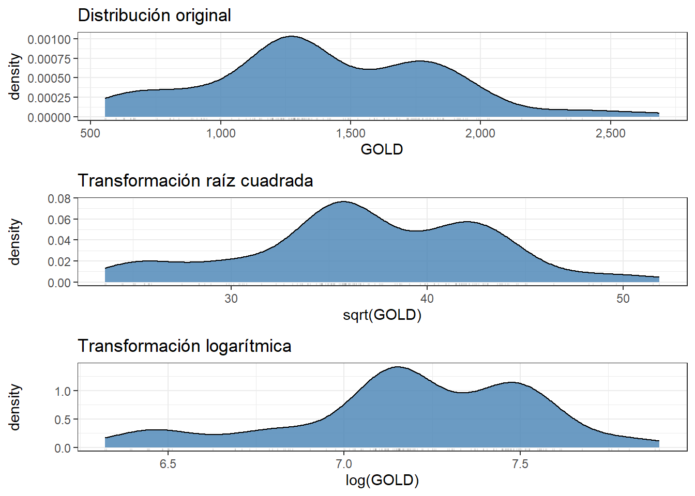
Distribución o Densidad
Código
p1 <- ggplot(data = d, aes(x = GOLD)) +
geom_density(fill = "steelblue", alpha = 0.8) +
geom_rug(alpha = 0.1) +
scale_x_continuous(labels = scales::comma) +
labs(title = "Distribución original") +
theme_bw()
p2 <- ggplot(data = d, aes(x = sqrt(GOLD))) +
geom_density(fill = "steelblue", alpha = 0.8) +
geom_rug(alpha = 0.1) +
scale_x_continuous(labels = scales::comma) +
labs(title = "Transformación raíz cuadrada") +
theme_bw()
p3 <- ggplot(data = d, aes(x = log(GOLD))) +
geom_density(fill = "steelblue", alpha = 0.8) +
geom_rug(alpha = 0.1) +
scale_x_continuous(labels = scales::comma) +
labs(title = "Transformación logarítmica") +
theme_bw()
ggarrange(p1, p2, p3, ncol = 1, align = "v")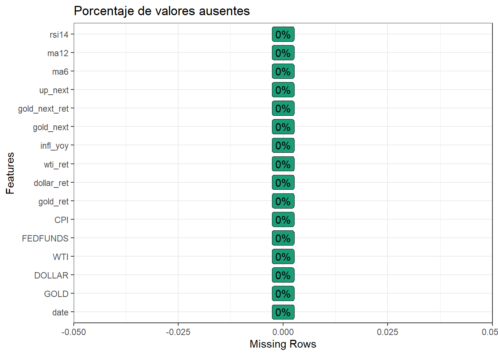
Varible ret
Código
p1 <- ggplot(data = d, aes(x = gold_ret)) +
geom_density(fill = "steelblue", alpha = 0.8) +
geom_rug(alpha = 0.1) +
scale_x_continuous(labels = scales::comma) +
labs(title = "Distribución original") +
theme_bw()
p2 <- ggplot(data = d, aes(x = sqrt(gold_ret))) +
geom_density(fill = "steelblue", alpha = 0.8) +
geom_rug(alpha = 0.1) +
scale_x_continuous(labels = scales::comma) +
labs(title = "Transformación raíz cuadrada") +
theme_bw()
p3 <- ggplot(data = d, aes(x = log(gold_ret))) +
geom_density(fill = "steelblue", alpha = 0.8) +
geom_rug(alpha = 0.1) +
scale_x_continuous(labels = scales::comma) +
labs(title = "Transformación logarítmica") +
theme_bw()
ggarrange(p1, p2, p3, ncol = 1, align = "v")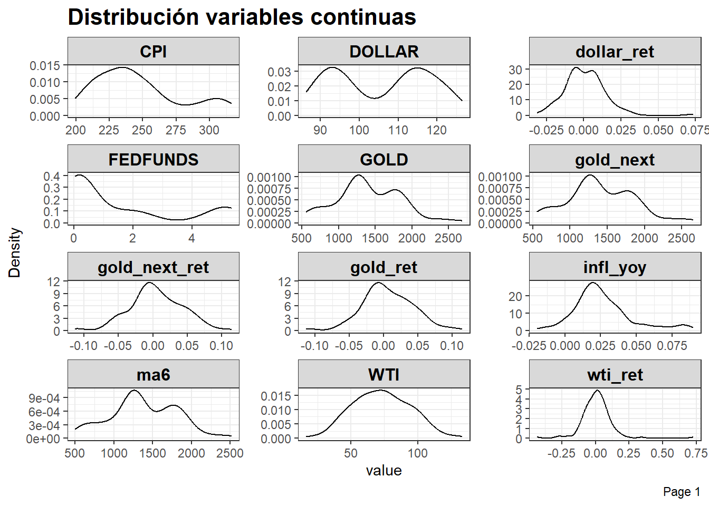
Distribución de variables continuas
Código
plot_density(
data = d %>% select(-up_next),
ncol = 3,
title = "Distribución variables continuas",
ggtheme = theme_bw(),
theme_config = list(
plot.title = element_text(size = 16, face = "bold"),
strip.text = element_text(colour = "black", size = 12, face = 2)
)
)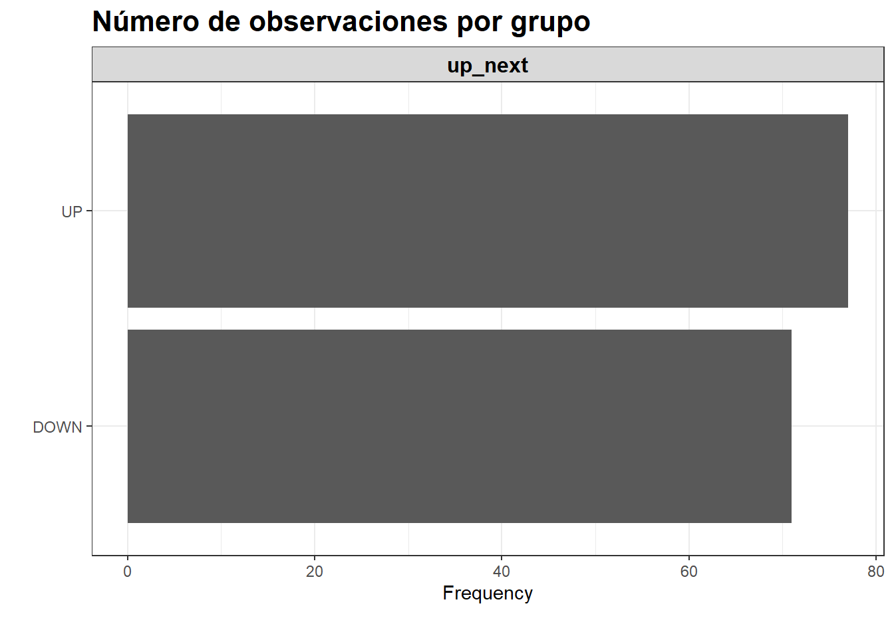

Plot de variables cualitativas
Código
plot_bar(
d,
ncol = 3,
title = "Número de observaciones por grupo",
ggtheme = theme_bw(),
theme_config = list(
plot.title = element_text(size = 16, face = "bold"),
strip.text = element_text(colour = "black", size = 12, face = 2),
legend.position = "none"
)
)1 columns ignored with more than 50 categories.
date: 148 categoriesCódigo
eda <- d |>
select(gold_next_ret, dollar_ret, wti_ret, infl_yoy, ma6, ma12, rsi14) |>
drop_na()
cor(eda, use="pairwise.complete.obs") |>
as.data.frame() |> rownames_to_column("var") |> as_tibble() |>
gt() |> tab_header(title="Correlaciones (Pearson)") |> fmt_num(everything(), dec=3)| Correlaciones (Pearson) | |||||||
|---|---|---|---|---|---|---|---|
| var | gold_next_ret | dollar_ret | wti_ret | infl_yoy | ma6 | ma12 | rsi14 |
| gold_next_ret | 1,000 | −0,242 | 0,088 | −0,083 | −0,023 | −0,023 | 0,141 |
| dollar_ret | −0,242 | 1,000 | −0,373 | 0,214 | 0,173 | 0,175 | −0,188 |
| wti_ret | 0,088 | −0,373 | 1,000 | −0,082 | 0,021 | 0,001 | 0,191 |
| infl_yoy | −0,083 | 0,214 | −0,082 | 1,000 | 0,326 | 0,333 | 0,108 |
| ma6 | −0,023 | 0,173 | 0,021 | 0,326 | 1,000 | 0,991 | 0,032 |
| ma12 | −0,023 | 0,175 | 0,001 | 0,333 | 0,991 | 1,000 | −0,071 |
| rsi14 | 0,141 | −0,188 | 0,191 | 0,108 | 0,032 | −0,071 | 1,000 |
El único predictor con cierta fuerza lineal sobre el oro es el dólar (negativo, -0.24).
Los demáes (petrólo, inflación, medias móviles, RSI) muestran correlaciones débiles con los rendimientos inmediatos del oro.
Existe multicolinealidad esperada entre medias móviles (ma6 y ma12), lo que hay que cuidar si se meten juntas en un modelo.
Indicadores técnicos (ma, rsi) están más relacionados entre sí que con el oro, lo cual tiene sentido porque son derivados de los mismos precios.
5 Tidymodels

6 Preprocesamiento
rsample: Creamos una división entre train y test
6.1 Partición temporal y feature engineering (Recipes)
Código
library(rsample)
library(recipes)
set.seed(123)
datos <- d |>
select(date, gold_next_ret, dollar_ret, wti_ret, infl_yoy, ma6, ma12, rsi14) |>
drop_na()
split <- initial_time_split(datos, prop = 0.80)
train <- training(split); test <- testing(split)
tibble(n_train=nrow(train), n_test=nrow(test),
min_train=min(train$date), max_train=max(train$date),
min_test=min(test$date), max_test=max(test$date)) |>
gt() |> tab_header(title="Partición temporal")| Partición temporal | |||||
|---|---|---|---|---|---|
| n_train | n_test | min_train | max_train | min_test | max_test |
| 118 | 30 | 2006-02-01 | 2021-06-01 | 2021-07-01 | 2024-11-01 |
Código
print (split)<Training/Testing/Total>
<118/30/148>Código
library(recipes)
#| label: recipe
rec <- recipes::recipe(gold_next_ret ~ dollar_ret + wti_ret + infl_yoy + ma6 + ma12 + rsi14, data=train) |>
step_zv(all_predictors()) |>
step_normalize(all_numeric_predictors()) |>
step_corr(all_numeric_predictors(), threshold = 0.95)
prep(rec) # mostrará qué variables elimina por colinealidad (p.ej. ma12)── Recipe ──────────────────────────────────────────────────────────────────────── Inputs Number of variables by roleoutcome: 1
predictor: 6── Training information Training data contained 118 data points and no incomplete rows.── Operations • Zero variance filter removed: <none> | Trained• Centering and scaling for: dollar_ret, wti_ret, infl_yoy, ... | Trained• Correlation filter on: ma12 | TrainedInputs
1 variable objetivo (
gold_next_ret) y 6 predictores (los listados)Training information
- La receta “aprendió” usando 118 observaciones de
trainy no encontró filas incompletas
Operations
Zero variance: no se eliminó ninguna (
<none>).Centering and scaling: se normalizaron todos los predictores numéricos.
Correlation filter on:
ma12: el filtro de correlación eliminóma12por estar muy correlacionada (|ρ| ≥ 0.95) con otra(s) variable(s) —típicamente conma6, porque son medias móviles muy parecidas.En otras palabras: tu diseño final para el modelo quedó con los predictores normalizados y sin
ma12(para evitar colinealidad).
- La receta “aprendió” usando 118 observaciones de
6.2 Especificación del modelo y engine (parsnip)
Código
library(parsnip)
mod_lm <- linear_reg() %>%
set_engine("lm")
wf <- workflow() |> add_recipe(rec) |> add_model(mod_lm)
wf══ Workflow ════════════════════════════════════════════════════════════════════
Preprocessor: Recipe
Model: linear_reg()
── Preprocessor ────────────────────────────────────────────────────────────────
3 Recipe Steps
• step_zv()
• step_normalize()
• step_corr()
── Model ───────────────────────────────────────────────────────────────────────
Linear Regression Model Specification (regression)
Computational engine: lm Se define un modelo de regresión lineal (
linear_reg()),Se indica que se va a usar el motor de R base
"lm"(set_engine("lm")).
Esto es la parte de parsnip: declara qué modelo quieres, pero aún no lo entrenas.workflow()crea un contenedor donde integras preprocesamiento + modelo.add_recipe(rec)añade la receta (rec) donde definiste las transformaciones de los datos.add_model(mod_lm)añade el modelo de regresión lineal que acabas de definir.Preprocessor: Recipe
Indica que usaste una receta con 3 pasos:
step_zv(): elimina variables con varianza cero (sin información).step_normalize(): normaliza las variables (media 0, varianza 1).step_corr(): elimina predictores altamente correlacionados (evita multicolinealidad).
Ajuste, predicción y diagnóstico
Código
fit_lm <- fit(wf, data = train)
preds <- predict(fit_lm, new_data = test) |>
bind_cols(test |> select(date, gold_next_ret))
preds |> slice_tail(n=24) |>
gt() |> tab_header(title="Predicciones (últimas filas)") |>
fmt_num(c(.pred, gold_next_ret), dec=6)| Predicciones (últimas filas) | ||
|---|---|---|
| .pred | date | gold_next_ret |
| −0,036721 | 2022-03-01 | −0,008770 |
| −0,033985 | 2022-04-01 | −0,045150 |
| −0,041014 | 2022-06-01 | −0,055508 |
| −0,050270 | 2022-07-01 | 0,017114 |
| −0,036562 | 2022-08-01 | −0,047266 |
| −0,051922 | 2022-09-01 | −0,008094 |
| −0,023869 | 2022-11-01 | 0,043505 |
| −0,017235 | 2022-12-01 | 0,057052 |
| −0,025340 | 2023-02-01 | 0,028466 |
| −0,018940 | 2023-03-01 | 0,047765 |
| −0,013781 | 2023-05-01 | −0,024929 |
| −0,008754 | 2023-06-01 | 0,003839 |
| −0,021000 | 2023-08-01 | −0,002505 |
| −0,020952 | 2023-09-01 | 0,000969 |
| −0,000790 | 2023-11-01 | 0,024420 |
| −0,003507 | 2023-12-01 | −0,002707 |
| −0,011772 | 2024-02-01 | 0,065018 |
| −0,005882 | 2024-03-01 | 0,078818 |
| −0,009868 | 2024-04-01 | 0,008184 |
| −0,002909 | 2024-05-01 | −0,009112 |
| −0,002817 | 2024-07-01 | 0,031529 |
| 0,001260 | 2024-08-01 | 0,043402 |
| −0,006938 | 2024-10-01 | −0,012634 |
| −0,012919 | 2024-11-01 | −0,003942 |
6.2.1 Qué hace cada línea
fit_lm <- fit(wf, data = train)
Ajusta el workflow (receta + modelolm) solo con el conjunto train.predict(fit_lm, new_data = test)
Genera la columna.pred(predicción del retorno del oro) sobre test.bind_cols(test |> select(date, gold_next_ret))
Anexa a las predicciones la fecha y el resultado real (gold_next_ret) para comparar.slice_tail(n = 8)
Muestra las 8 últimas observaciones (útil si los datos son cronológicos).
6.2.2 Cómo leer la tabla
.pred: lo que estima el modelo.gold_next_ret: el valor real observado.Comparando ambos puedes evaluar si el modelo subestima o sobreestima en cada fecha.
- Ej.: 2024-02-01 →
.pred = -0.011772vs real0.065018→ fuerte subestimación (residuo ≈ +07679.0).
- Ej.: 2024-02-01 →
Código
preds |>
ggplot(aes(gold_next_ret, .pred)) +
geom_point(alpha=0.7) +
geom_smooth(method="lm", se=FALSE, linewidth=0.9) +
labs(x="Real", y="Predicho") + theme_minimal()`geom_smooth()` using formula = 'y ~ x'
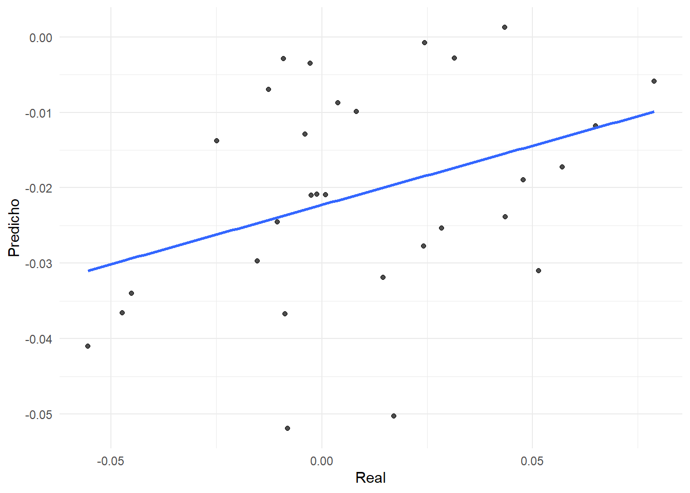
Qué muestra:
Eje X → valores reales de la variable dependiente (
gold_next_ret).Eje Y → valores predichos por el modelo (
.pred).La línea azul es un ajuste lineal auxiliar que indica la tendencia.
Interpretación:
Existe una relación positiva, pero débil: cuando el valor real aumenta, el modelo tiende a predecir valores mayores, aunque con bastante dispersión.
Muchos puntos se alejan de la línea, lo que indica que el modelo no captura bien la variabilidad de los datos.
Idealmente, si el modelo fuera perfecto, los puntos deberían alinearse en una diagonal con pendiente = 1 (línea identidad). Aquí, la nube dispersa muestra que el ajuste es limitado.
Código
preds |>
mutate(resid = gold_next_ret - .pred) |>
ggplot(aes(date, resid)) +
geom_hline(yintercept=0, linetype=2, color="gray50") +
geom_line(linewidth=0.8, color="firebrick") +
theme_minimal() + labs(x=NULL, y="Residual")
Qué muestra:
Eje X → tiempo (fecha).
Eje Y → residuo = real − predicho.
La línea punteada en 0 indica el ideal (residuos centrados en cero).
Interpretación
Los residuos oscilan en torno a cero, pero se observan patrones cíclicos (suben y bajan en bloques).
Esto sugiere que el modelo no captura componentes temporales o estacionales de la serie (muy típico en series financieras/temporales)
Aunque no hay una tendencia clara de crecimiento en magnitud (no aumenta la varianza con el tiempo), sí se aprecia estructura → indicio de autocorrelación en los errores.
Conclusión general
El modelo de regresión lineal capta la dirección general (positiva) pero con poder predictivo débil.
Los residuos muestran estructura temporal, lo que indica que no son completamente aleatorios → se viola el supuesto de independencia.
Para datos con fechas (series temporales), sería recomendable probar modelos que incorporen dependencia temporal, como:
- Modelos de machine learning adaptados a series temporales (XGBoost con lags, Prophet, LSTM, etc.).
Código
eng <- fit_lm |> extract_fit_engine()
broom::glance(eng) |>
gt() |> tab_header(title="Resumen (engine lm)") |>
fmt_num(c(r.squared, adj.r.squared, sigma, AIC, BIC, statistic, p.value), dec=6)| Resumen (engine lm) | |||||||||||
|---|---|---|---|---|---|---|---|---|---|---|---|
| r.squared | adj.r.squared | sigma | statistic | p.value | df | logLik | AIC | BIC | deviance | df.residual | nobs |
| 0,091388 | 0,050825 | 0,038613 | 2,252979 | 0,053903 | 5 | 219.6353 | −425,270617 | −405,875825 | 0.1669894 | 112 | 118 |
Código
lmtest::dwtest(eng); lmtest::bptest(eng); performance::check_model(eng)
Durbin-Watson test
data: eng
DW = 2.1906, p-value = 0.7778
alternative hypothesis: true autocorrelation is greater than 0
studentized Breusch-Pagan test
data: eng
BP = 12.134, df = 5, p-value = 0.03299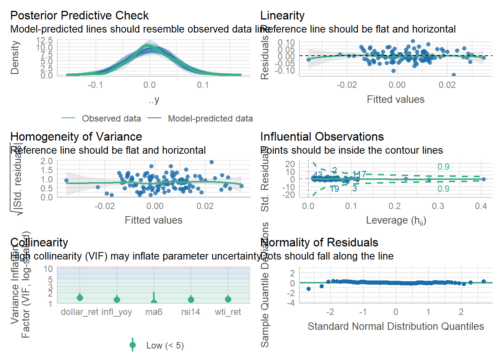
6.2.3 1. Durbin–Watson
Hipótesis:
H₀: no hay autocorrelación de primer orden en los residuos.
H₁: existe autocorrelación positiva.
Resultado: DW = 2.1906, p-valor = 0.7778.
Interpretación: DW ≈ 2 y p-valor alto → no se rechaza H₀
6.2.4 2. Breusch–Pagan
Hipótesis:
H₀: varianza constante de los residuos (homocedasticidad).
H₁: heterocedasticidad.
Resultado: BP = 12.134, p-valor = 0.03299.
Interpretación: p-valor < 0.05 → se rechaza H₀.
Hay evidencia de heterocedasticidad en los residuos.
Panel gráfico
Posterior Predictive Check
- La densidad de los datos observados y predichos es parecida, aunque el modelo suaviza demasiado los extremos.
Ajuste razonable pero con pérdida de variabilidad en colas
- La densidad de los datos observados y predichos es parecida, aunque el modelo suaviza demasiado los extremos.
- Linearity
Residuos frente a valores ajustados → no hay una curva clara, pero sí dispersión irregular.\
La relación lineal es aceptable, aunque no perfecta.
**Homogeneity of Variance**
Los residuos deberían estar en una banda horizontal.
- Aquí se observa dispersión creciente en algunos tramos.
Refuerza lo detectado por Breusch–Pagan: **heterocedasticidad**.
**Influential Observations (Cook’s D / leverage)**
La mayoría de puntos está dentro de las líneas de influencia, pero algunos se acercan al borde.\
xisten observaciones influyentes, aunque no excesivas.
**Collinearity (VIF)**
- Todos los predictores tienen VIF \< 5 (umbral de preocupación).
**No hay problema grave de multicolinealidad**.
- **Normality of Residuals (Q-Q plot)**
La mayoría de puntos sigue la diagonal, salvo en las colas.\
Los residuos son aproximadamente normales, con ligeras desviaciones en valores extremos.6.3 Métricas y validación temporal
Código
yardstick::metrics(preds, truth = gold_next_ret, estimate = .pred) |>
gt() |> tab_header(title="Métricas en Test") |> fmt_num(.estimate, dec=6)| Métricas en Test | ||
|---|---|---|
| .metric | .estimator | .estimate |
| rmse | standard | 0,043117 |
| rsq | standard | 0,130291 |
| mae | standard | 0,034454 |
RMSE (Root Mean Squared Error) = 0.0431
→ Error cuadrático medio de alrededor del 4.3% en los retornos.
Mientras más bajo, mejor.MAE (Mean Absolute Error) = 0.0345
→ En promedio, la predicción se equivoca en ±3.4% del retorno.R² (rsq) = 0.1303
→ El modelo explica apenas el 13% de la variabilidad en el retorno del oro.
Esto es bastante bajo, indicando que la regresión lineal simple capta muy poco de la dinámica real.Conclusión: el modelo tiene baja capacidad predictiva en el test. Captura algo de señal, pero la mayoría del comportamiento sigue siendo ruido.
Código
set.seed(123)
rs <- rolling_origin(
datos,
initial = 60, assess = 12, skip = 6, cumulative = TRUE
)
res_cv <- fit_resamples(wf, resamples = rs, control = control_resamples(save_pred = TRUE))
collect_metrics(res_cv) |>
gt() |> tab_header(title="CV temporal (promedios)") |> fmt_num(c(mean, std_err), dec=6)| CV temporal (promedios) | |||||
|---|---|---|---|---|---|
| .metric | .estimator | mean | n | std_err | .config |
| rmse | standard | 0,036623 | 11 | 0,002130 | Preprocessor1_Model1 |
| rsq | standard | 0,047869 | 11 | 0,013954 | Preprocessor1_Model1 |
RMSE promedio = 0.0366 (±0.0021)
→ En promedio, el error cuadrático medio de predicción es ~3.7%.
→ Es un poco mejor que el RMSE en el test simple (0.0431).R² promedio = 0.0479 (±0.0140)
→ El modelo solo explica alrededor del 5% de la variabilidad en los retornos.
→ Es incluso más bajo que en el test simple (0.13).
→ Esto confirma que el modelo no generaliza bien a lo largo del tiempo.Capacidad predictiva: aunque el RMSE no es alto en términos absolutos, el R² cercano a cero muestra que la regresión lineal apenas supera a un modelo trivial (predicción constante en la media).
Confirmación: lo que viste en test simple no fue casualidad: el modelo lineal no logra capturar patrones temporales en los retornos del oro.
El modelo de regresión lineal tiene poco poder explicativo en series financieras de retornos
Usar algoritmos de ML más flexibles con rolling CV (Random Forest, XGBoost, redes neuronales).
Para mejorar, se recomienda:
- Incorporar lags (retardos) del oro y de los predictores.
6.4 Conclusión Final del Modelo
Ajuste del modelo
Se especificó y entrenó un modelo de regresión lineal en el framework tidymodels, con un flujo completo: preprocesamiento (normalización, eliminación de variables redundantes), ajuste y evaluación.
- El modelo permitió obtener predicciones y realizar diagnósticos formales (residuos, autocorrelación, heterocedasticidad, normalidad, influencia)
Resultados en Test
**RMSE ≈ 0.043** y **MAE ≈ 0.034** → errores moderados en escala de retornos.
**R² ≈ 0.13** → el modelo explica apenas un 13% de la variabilidad.
**Validación Temporal (rolling-origin)**
- **RMSE promedio ≈ 0.037**, estable en distintas ventanas temporales.
**R² promedio ≈ 0.048**, cercano a cero → el modelo tiene poca capacidad explicativa.
Esto confirma que los resultados en test simple no fueron casualidad: la regresión lineal **no capta patrones temporales robustos en los retornos**.
- **Diagnóstico de supuestos**
- **No autocorrelación** significativa de los residuos (Durbin–Watson correcto).
**Heterocedasticidad presente** (Breusch–Pagan significativo).
Residuos aproximadamente normales, con desvíos en colas.
Sin problemas graves de multicolinealidad (VIF \< 5).
**Interpretación económica y práctica**
- El retorno del oro no puede explicarse bien solo con regresores lineales como dólar, petróleo, inflación o indicadores técnicos.
Los resultados reflejan la **alta aleatoriedad y ruido en series financieras de retornos**, donde los modelos lineales básicos son insuficientes.Código
library(tidyverse)
library(gt)
# Intento 1: pedir IC al workflow (parsnip reciente lo soporta)
preds_ci <- tryCatch({
predict(fit_lm, new_data = test, type = "conf_int") %>%
bind_cols(
predict(fit_lm, new_data = test, type = "numeric"),
test %>% select(date, gold_next_ret)
)
}, error = function(e) {
# Fallback: extraer el lm interno y hornear test con la receta
rec_prep <- recipes::prep(rec)
test_baked <- recipes::bake(rec_prep, new_data = test)
eng_lm <- workflows::extract_fit_engine(fit_lm) # objeto 'lm'
ci_lm <- as.data.frame(predict(eng_lm, newdata = test_baked, interval = "confidence"))
names(ci_lm) <- c(".pred", ".pred_lower", ".pred_upper")
bind_cols(test %>% select(date, gold_next_ret), ci_lm)
})
# Rango de fechas efectivamente predicho en TEST
rango <- preds_ci %>% summarise(min_fecha = min(date), max_fecha = max(date))
print(rango)# A tibble: 1 × 2
min_fecha max_fecha
<date> <date>
1 2021-07-01 2024-11-01Código
# Tabla de los últimos 12 meses
preds_ci %>%
arrange(date) %>%
slice_tail(n = 12) %>%
select(date, gold_next_ret, .pred, .pred_lower, .pred_upper) %>%
gt() %>%
tab_header(title = "LM múltiple: Real vs Predicho (IC 95%) — últimos 12 meses") %>%
fmt_number(columns = c(gold_next_ret, .pred, .pred_lower, .pred_upper),
decimals = 6, dec_mark = ",", sep_mark = ".")| LM múltiple: Real vs Predicho (IC 95%) — últimos 12 meses | ||||
|---|---|---|---|---|
| date | gold_next_ret | .pred | .pred_lower | .pred_upper |
| 2023-08-01 | −0,002505 | −0,021000 | −0,042025 | 0,000026 |
| 2023-09-01 | 0,000969 | −0,020952 | −0,042479 | 0,000575 |
| 2023-11-01 | 0,024420 | −0,000790 | −0,028023 | 0,026443 |
| 2023-12-01 | −0,002707 | −0,003507 | −0,027848 | 0,020835 |
| 2024-02-01 | 0,065018 | −0,011772 | −0,030535 | 0,006990 |
| 2024-03-01 | 0,078818 | −0,005882 | −0,027013 | 0,015249 |
| 2024-04-01 | 0,008184 | −0,009868 | −0,032426 | 0,012690 |
| 2024-05-01 | −0,009112 | −0,002909 | −0,028283 | 0,022465 |
| 2024-07-01 | 0,031529 | −0,002817 | −0,028128 | 0,022495 |
| 2024-08-01 | 0,043402 | 0,001260 | −0,027939 | 0,030459 |
| 2024-10-01 | −0,012634 | −0,006938 | −0,037252 | 0,023376 |
| 2024-11-01 | −0,003942 | −0,012919 | −0,044631 | 0,018793 |
Código
library(ggplot2)
preds_ci %>%
arrange(date) %>%
ggplot(aes(date)) +
geom_line(aes(y = gold_next_ret), linewidth = 0.7, alpha = 0.9) +
geom_ribbon(aes(ymin = .pred_lower, ymax = .pred_upper), alpha = 0.20) +
geom_line(aes(y = .pred), linewidth = 0.9, color = "blue") +
labs(
title = "Regresión lineal múltiple: Real vs Predicho con IC 95%",
x = NULL, y = "Retorno del oro (t+1)",
caption = "Línea negra: real | Línea azul: predicho | Banda: IC 95% (media condicional)"
) +
theme_minimal()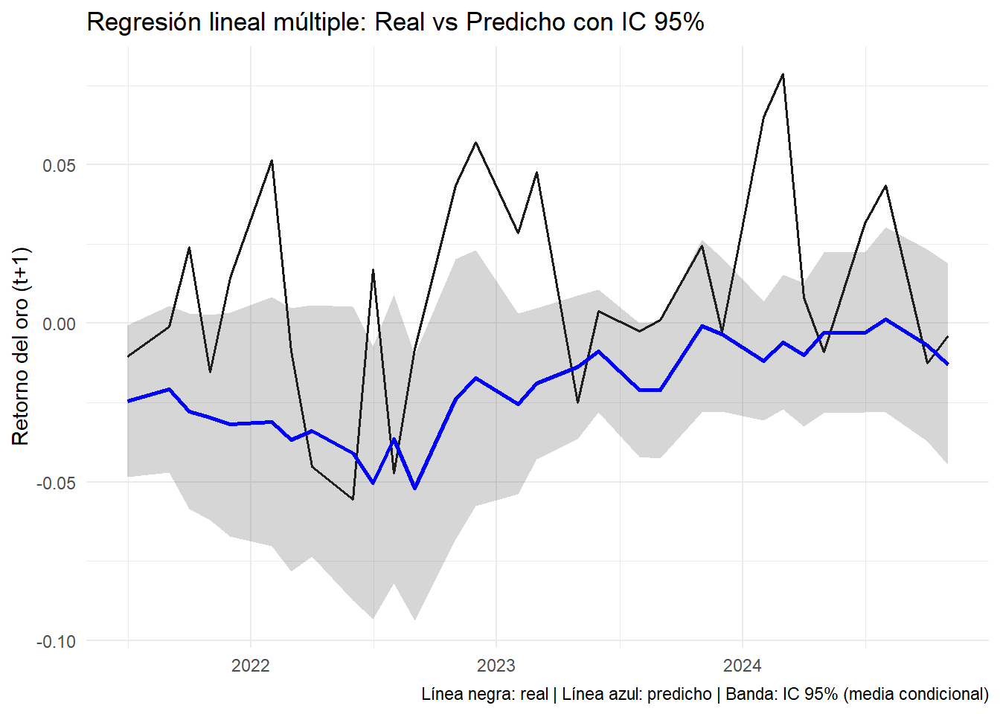
7 Unidad 4. Regresión Logística
En análisis econométrico, cuando la variable dependiente es binaria (toma valores 0 o 1), como por ejemplo:
Trabaja (1) o no trabaja (0)
Está enfermo (1) o no está enfermo (0),
Vota por un candidato (1) o no (0),
El uso de un modelo de regresión lineal tradicional no es adecuado. El modelo logit se propone como una solución, garantizando que las probabilidades predichas estén siempre en el rango [0,1] gracias a la función logística.
Probabilidad en el modelo logit
\[ P(Y=1 \mid X) \;=\; \frac{e^{\beta_0 + \beta_1 X_1 + \cdots + \beta_k X_k}}{1 + e^{\beta_0 + \beta_1 X_1 + \cdots + \beta_k X_k}} \]
Forma de razón de probabilidades (odds); definimos la razón de probabilidades u odds como:
\[ \text{odds} \;=\; \frac{P(Y=1 \mid X)}{1 - P(Y=1 \mid X)} \]
Linealización mediante el logit
Al aplicar logaritmo a los odds, obtenemos la funcion logit, que es lineal en los parámetros
\[ \text{logit}(P) \;=\; \ln\left(\frac{P(Y=1 \mid X)}{1 - P(Y=1 \mid X)}\right) = \beta_0 + \beta_1 X_1 + \cdots + \beta_k X_k \]
Interpretación de los coeficientes
Un cambio unitario en \(X_i\) altera las odds en un factor multiplicativo:
\[ \Delta \text{odds} \;=\; e^{\beta_i} \]
Ejemplo práctico
Queremos modelar la probabilidad de que el precio del oro aumente en un día ( \(Y\)=1) o no aumente (\(Y\)=0), en función de variables financieras:
Variación del dólar: rendimiento diario del dólar
Tasa de interés : nivel de la tasa de interés de referencia.
Variable dependiente (Binaria)
\[ Y = \begin{cases} 1 & \text{si el precio del oro sube ese día} \\ 0 & \text{si baja o se mantiene} \end{cases} \]
- ¿Cómo queda el modelo logit?
\[ P(Y=1 \mid X) \;=\; \frac{e^{\beta_0 + \beta_1 \cdot dollar\_ret + \beta_2 \cdot rate}} {1 + e^{\beta_0 + \beta_1 \cdot dollar\_ret + \beta_2 \cdot rate}} \]
Resultados simulados:
Supongamos que la estimación nos da:
- \(B_0\) =-0.5
- \(B_1\) = -2.0 (rendimiento del dólar)
- \(B_2\) = -0.3 (tasa de interés)
Modelo estimado
\[ \hat{P}(Y=1 \mid X) \;=\; \frac{e^{-0.5 - 2.0 \cdot dollar\_ret - 0.3 \cdot rate}} {1 + e^{-0.5 - 2.0 \cdot dollar\_ret - 0.3 \cdot rate}} \]
Interpretación de los coeficientes
Coeficiente del Dolar
Si el dólar sube un punto porcentual, las odds de que el oro suba se reducen en un factor
\[ e^{-2.0} \;\approx\; 0.14 \]
En términos prácticos: cuando el dólar se fortalece, el oro casi siempre baja (relación inversa clásica).
Coeficiente de la tasa de interés
Un incremento de un punto en la tasa de interés reduce las odds de que el oro suba en un factor
\[ e^{-0.3} \;\approx\; 0.74 \]
Es decir, tasas más altas desincentivan la inversión en oro (activo de refugio sin rendimiento).
Supongamos:
\(dollar_ret=−0.01\) el dólar cae 1%
\(rate=2\)%
Sustituimos
\[ z = -0.5 - 2.0(-0.01) - 0.3(2) = -0.5 + 0.02 - 0.6 = -1.08 \]
\[ \hat{P}(Y=1) \;=\; \frac{e^{-1.08}}{1 + e^{-1.08}} \;\approx\; 0.25 \]
La probabilidad de que el oro suba bajo esas condiciones es 25%.
| Distribución de clases (objetivo: up_next) | ||
|---|---|---|
| up_next | n | prop |
| DOWN | 71 | 0,480 |
| UP | 77 | 0,520 |
8 Partición temporal 80/20
Código
set.seed(123)
datos_cls <- d |>
select(date, up_next, dollar_ret, wti_ret, infl_yoy, ma6, ma12, rsi14) |>
arrange(date)
split_cls <- initial_time_split(datos_cls, prop = 0.80)
train_cls <- training(split_cls)
test_cls <- testing(split_cls)
tibble(
n_train = nrow(train_cls), n_test = nrow(test_cls),
min_train = min(train_cls$date), max_train = max(train_cls$date),
min_test = min(test_cls$date), max_test = max(test_cls$date)
) |>
gt() |> tab_header(title = "Partición temporal (clasificación)")| Partición temporal (clasificación) | |||||
|---|---|---|---|---|---|
| n_train | n_test | min_train | max_train | min_test | max_test |
| 118 | 30 | 2006-02-01 | 2021-06-01 | 2021-07-01 | 2024-11-01 |
8.1 Feature Engineering (recipes)
Código
rec_cls <- recipe(
up_next ~ dollar_ret + wti_ret + infl_yoy + ma6 + ma12 + rsi14,
data = train_cls
) |>
step_zv(all_predictors()) |> # quita columnas constantes
step_normalize(all_numeric_predictors()) |> # centra/escala numéricos
step_corr(all_numeric_predictors(), threshold = 0.95) # colinealidad severa
rec_cls── Recipe ──────────────────────────────────────────────────────────────────────── Inputs Number of variables by roleoutcome: 1
predictor: 6── Operations • Zero variance filter on: all_predictors()• Centering and scaling for: all_numeric_predictors()• Correlation filter on: all_numeric_predictors()Código
# (Opcional) Si ves desbalance fuerte, puedes balancear SOLO en train:
# rec_cls <- rec_cls |> step_smote(up_next, over_ratio = 1)
# -> requiere library(themis)Por qué: normalizamos escalas; reducimos colinealidad (ma6 vs ma12); opcionalmente balanceamos (SMOTE) si la clase UP o DOWN es muy minoritaria.
8.2 Especificación del modelo
Código
mod_log <- logistic_reg() |>
set_engine("glm") |>
set_mode("classification")
summary(mod_log) Length Class Mode
args 2 -none- list
eng_args 0 quosures list
mode 1 -none- character
user_specified_mode 1 -none- logical
method 0 -none- NULL
engine 1 -none- character
user_specified_engine 1 -none- logical Por qué: glm logística es interpretable y un buen baseline; luego puedes pasar a glmnet con penalización si quieres.
8.3 Workflow
Código
wf_cls <- workflow() |>
add_recipe(rec_cls) |>
add_model(mod_log)
wf_cls══ Workflow ════════════════════════════════════════════════════════════════════
Preprocessor: Recipe
Model: logistic_reg()
── Preprocessor ────────────────────────────────────────────────────────────────
3 Recipe Steps
• step_zv()
• step_normalize()
• step_corr()
── Model ───────────────────────────────────────────────────────────────────────
Logistic Regression Model Specification (classification)
Computational engine: glm Por qué: asegura que el preprocesamiento (receta) se aplique dentro del pipeline (sin data leakage) antes de entrenar/predicir.
8.4 Ajuste (fit) y predicción en test
Código
fit_log <- fit(wf_cls, data = train_cls)
# Probabilidades y clases (umbral 0.5 por defecto)
pred_cls <- predict(fit_log, new_data = test_cls, type = "prob") |>
bind_cols(predict(fit_log, new_data = test_cls, type = "class")) |>
bind_cols(test_cls |> select(date, up_next))
pred_cls |> head() |> gt() |> tab_header(title = "Predicciones (muestra)")| Predicciones (muestra) | ||||
|---|---|---|---|---|
| .pred_DOWN | .pred_UP | .pred_class | date | up_next |
| 0.8290540 | 0.1709460 | DOWN | 2021-07-01 | DOWN |
| 0.8312140 | 0.1687860 | DOWN | 2021-09-01 | DOWN |
| 0.8740823 | 0.1259177 | DOWN | 2021-10-01 | UP |
| 0.8747655 | 0.1252345 | DOWN | 2021-11-01 | DOWN |
| 0.8931019 | 0.1068981 | DOWN | 2021-12-01 | UP |
| 0.8934147 | 0.1065853 | DOWN | 2022-02-01 | UP |
type = "prob"devuelve(.pred_DOWN, .pred_UP)type = "class"usa umbral 0.5 para asignar claseQué significan las columnas
- **`.pred_DOWN` y `.pred_UP`**\
Son las **probabilidades estimadas** de que la variable respuesta tome cada clase.
- Ejemplo: `0.829 → DOWN`, `0.171 → UP`.
**`.pred_class`**\
Es la **clase predicha** por el modelo. Se asigna según la probabilidad mayor (umbral 0.5 por defecto).
- Si `pred_DOWN > 0.5`, la clase es *DOWN*.
Si `pred_UP > 0.5`, la clase es *UP*.
**`date`**\
El período de la observación en el set de prueba.
**`up_next`**\
La **clase real observada** (lo que efectivamente pasó en la variable dependiente).
## 🔎 Interpretación de la muestra
1. **Primera fila (2021-07-01)**
- Modelo: 82.9% probabilidad de *DOWN*.
Predicción: *DOWN*.
Realidad: *DOWN*.\
→ ✅ Acierto.
2. **Segunda fila (2021-09-01)**
Prob. *DOWN* 83.1% vs *UP* 16.9%.
Predicción: *DOWN*.
Realidad: *DOWN*.\
→ ✅ Acierto.
3. **Tercera fila (2021-10-01)**
4. Prob. *DOWN* 87.4% vs *UP* 12.6%.
Predicción: *DOWN*.
Realidad: *UP*.\
→ ❌ Error: el modelo estaba muy seguro pero se equivocó.
**Cuarta fila (2021-11-01)**
- Prob. *DOWN* 87.5%.
Predicción: *DOWN*
Realidad: *DOWN*.\
→ ✅ Acierto
**Quinta fila (2021-12-01)**
- Prob. *DOWN* 89.3%.
Predicción: *DOWN*.
Realidad: *DOWN*.\
→ ✅ Acierto.
- **Sexta fila (2022-01-01)**
Prob. *DOWN* 89.3%.
Predicción: *DOWN*.
Realidad: *UP*.\
→ ❌ Error.
## Evaluación de la clasificación
### Métricas básicasCódigo
# Accuracy, Kappa, etc.
metrics_overall <- yardstick::metrics(pred_cls, truth = up_next, estimate = .pred_class)
gt(metrics_overall) |> tab_header(title = "Métricas (umbral 0.5)")| Métricas (umbral 0.5) | ||
|---|---|---|
| .metric | .estimator | .estimate |
| accuracy | binary | 0.4666667 |
| kap | binary | 0.0000000 |
8.5 Resultados mostrados
Accuracy (Exactitud): 0.467
El modelo acierta en ≈47% de los casos.
Esto es peor que lanzar una moneda al aire (50%), lo cual indica que el modelo no está aprendiendo un patrón útil con el umbral de 0.5.
Kappa (Cohen’s Kappa): 0.000
Kappa mide el acuerdo entre lo predicho y lo real, corrigiendo por el azar.
Un valor cercano a 0 significa que el modelo no predice mejor que el azar.
Valores aceptables suelen estar sobre 0.2 (débil), 0.4 (moderado), 0.6+ (fuerte).
8.6 🔎 Interpretación
Sesgo hacia una clase
El modelo probablemente predice la mayoría de las veces la clase DOWN, lo que hace que falle cuando la clase real es UP.
Esto puede deberse a un desbalance de clases en los datos de entrenamiento.Umbral fijo (0.5)
Con un umbral de decisión de 0.5, el modelo puede estar siendo demasiado rígido. Quizás ajustando el umbral se mejore el equilibrio entre sensibilidad (recall) y precisión (precision).Valor práctico
Tal como está, el modelo no es confiable para tomar decisiones, porque no supera el azar. Necesita:Revisión de balance de clases (ej. downsample, upsample, SMOTE).
Revisión de features (quizás faltan variables explicativas relevantes).
Ajuste del umbral para clasificar.
8.7 Matriz de confusión + sensibilidad /especificidad
Código
cm <- conf_mat(pred_cls, truth = up_next, estimate = .pred_class)
cm Truth
Prediction DOWN UP
DOWN 14 16
UP 0 0Código
# Sensibilidad (TPR) y especificidad (TNR)
sens <- sens(pred_cls, truth = up_next, estimate = .pred_class, event_level = "second") # 'UP' es el segundo nivel
spec <- spec(pred_cls, truth = up_next, estimate = .pred_class, event_level = "second")
bind_rows(sens, spec) |>
gt() |> tab_header(title = "Sensibilidad y Especificidad (umbral 0.5)")| Sensibilidad y Especificidad (umbral 0.5) | ||
|---|---|---|
| .metric | .estimator | .estimate |
| sens | binary | 0 |
| spec | binary | 1 |
14 aciertos en DOWN → el modelo predijo DOWN cuando realmente fue DOWN.
16 errores en UP → el modelo siempre predijo DOWN, incluso cuando la realidad era UP.
0 aciertos en UP → el modelo nunca predijo UP.
Sensibilidad (Recall para UP):
La sensibilidad mide la capacidad de detectar correctamente los positivos (UP).
Aquí es 0%, porque nunca se predijo UP cuando realmente ocurrió.
⚠️ El modelo falla totalmente en detectar la clase UP.
Especificidad (Recall para DOWN): 1
La especificidad mide la capacidad de detectar correctamente los negativos (DOWN).
Aquí es 100%, porque todo lo que fue DOWN se predijo como DOWN.
Pero ojo: esto se logra porque el modelo siempre predice DOWN, lo cual sesga completamente los resultados.
El modelo está totalmente sesgado hacia la clase DOWN.
Esto es típico en un problema de desbalance de clases: si hay más casos de DOWN en los datos de entrenamiento, el modelo aprende a “jugar seguro” prediciendo siempre esa clase.
Por eso:
Accuracy global bajo (≈47%)
Kappa = 0 (no mejor que el azar).
Sensibilidad = 0 (incapaz de detectar UP).
Especificidad = 1 (detecta bien DOWN, pero por sesgo, no por aprendizaje real).
Código
table(train_cls$up_next) / nrow(train_cls)
DOWN UP
0.4830508 0.5169492 8.7.1 Curva ROC/AUC y Pr AUC
Código
roc_auc(pred_cls, truth = up_next, .pred_UP, event_level = "second")# A tibble: 1 × 3
.metric .estimator .estimate
<chr> <chr> <dbl>
1 roc_auc binary 0.585Código
roc_df <- roc_curve(pred_cls, truth = up_next, .pred_UP, event_level = "second")
autoplot(roc_df) + ggtitle("ROC Curve (Logistic glm)")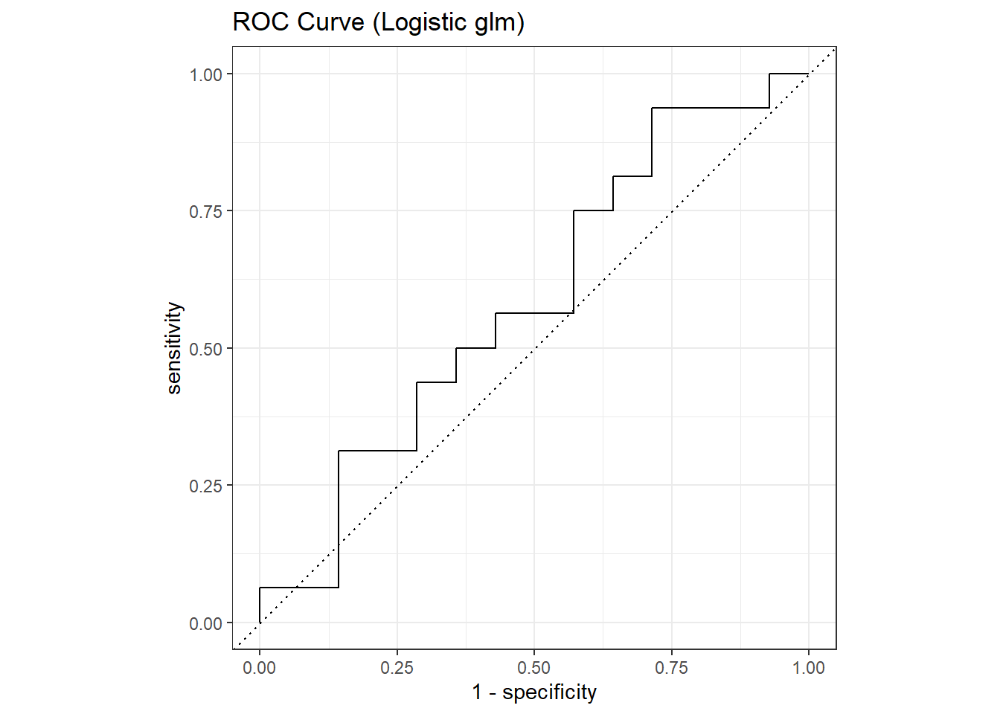
Código
pr_df <- pr_curve(pred_cls, truth = up_next, .pred_UP, event_level = "second")
autoplot(pr_df) + ggtitle("Precision–Recall Curve")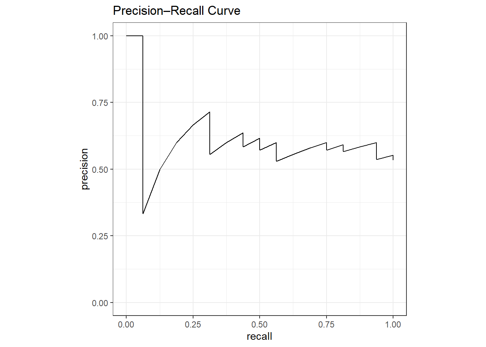
Por qué: ROC/AUC resumen discriminación global; PR-AUC útil cuando la clase positiva es rara.
8.8 Resultados clave
ROC AUC = 0.585
El área bajo la curva ROC mide la capacidad del modelo para discriminar entre UP y DOWN.
Un valor de 0.5 indica azar puro, y 1.0 indica discriminación perfecta.
Con 0.585, tu modelo discrimina apenas un poco mejor que el azar, lo cual es débil desempeño.
Curva ROC
La curva está muy cercana a la diagonal (línea punteada = azar).
Esto confirma que el poder predictivo es bajo: el modelo no logra separar bien entre positivos (UP) y negativos (DOWN).
Curva Precisión–Recall
La precisión cae rápido a medida que aumenta el recall.
Esto muestra que cuando intentas capturar más casos UP (mayor recall), lo haces a costa de perder precisión (muchos falsos positivos).
Una curva que se mantiene alta y hacia la esquina superior derecha indicaría buen desempeño, pero aquí está bastante dispersa.
8.8.1 Afinar umbral
Código
library(tidymodels)
# 1) Curva PR (precision & recall por umbral)
pr_tbl <- pr_curve(pred_cls,
truth = up_next,
.pred_UP, # sin "estimate ="
event_level = "second") # 'UP' es la clase positiva
# 2) Calcular F1 por umbral y elegir el mejor
best_row <- pr_tbl %>%
filter(!is.na(.threshold)) %>% # descarta el punto inicial (NA)
mutate(F1 = 2 * precision * recall / (precision + recall)) %>%
arrange(desc(F1)) %>%
slice(1)
best_row# A tibble: 1 × 4
.threshold recall precision F1
<dbl> <dbl> <dbl> <dbl>
1 0.101 0.938 0.6 0.732Código
thr <- best_row$.threshold
# 3) Re-clasificar con el umbral óptimo y evaluar
pred_thr <- pred_cls %>%
mutate(.pred_class_thr = factor(if_else(.pred_UP >= thr, "UP", "DOWN"),
levels = c("DOWN","UP")))
metrics(pred_thr, truth = up_next, estimate = .pred_class_thr) %>%
gt() %>%
tab_header(title = paste0("Métricas con umbral óptimo (F1) = ", round(thr, 3)))| Métricas con umbral óptimo (F1) = 0.101 | ||
|---|---|---|
| .metric | .estimator | .estimate |
| accuracy | binary | 0.6333333 |
| kap | binary | 0.2325581 |
8.9 Resultados con umbral óptimo (F1)
Umbral = 0.101
→ Esto significa que cualquier probabilidad de UP ≥ 0.101 se clasifica como UP.
→ Es un umbral mucho más bajo que 0.5, lo que permite al modelo detectar casos UP que antes ignoraba.Recall (sensibilidad para UP) = 0.938
→ El modelo ahora detecta el 93.7% de los casos UP.
→ Excelente mejora (antes era 0%).Precision (precisión para UP) = 0.60
→ De todas las predicciones UP, el 60% fueron correctas.
→ Aceptable, considerando que antes era inexistente.F1 = 0.731
→ El F1 combina recall y precision.
→ Mejoró sustancialmente (antes ≈0).Accuracy = 0.633
→ El modelo acierta en el 63.3% de los casos totales.
→ Mejor que el azar (50%) y también mejor que con umbral 0.5 (46.7%).Kappa = 0.233
→ Aún bajo, pero mejor que 0.
→ Indica un acuerdo débil, aunque ya superior al azar.
8.10 🔎 Interpretación
El ajuste de umbral corrige el sesgo: ahora el modelo sí detecta UP.
El costo: aumenta la probabilidad de falsos positivos, pero se logra un balance mejor entre sensibilidad y precisión.
Este cambio mejora notablemente la utilidad práctica del modelo, especialmente si es crítico no perder casos UP.
Sin embargo, la AUC (≈0.58) muestra que la capacidad discriminativa del modelo sigue siendo limitada.
8.11 🚀 Recomendaciones
Mantener este análisis como evidencia de que el umbral fijo 0.5 no era adecuado.
Explorar técnicas adicionales para mejorar la discriminación:
Balanceo de clases en el entrenamiento (SMOTE, undersampling, oversampling).
Modelos no lineales (árboles, random forest, XGBoost).
Inclusión de más variables predictoras relevantes.
Reportar tanto las métricas con umbral estándar (0.5) como con umbral optimizado (≈0.101) para mostrar la ganancia.
📌 Resumen:
Con el umbral optimizado (0.101), el modelo pasó de “no detectar nunca UP” a capturar casi todos los UP (93.7% de recall), con un nivel razonable de precisión (60%) y una mejora clara en exactitud y F1.
8.11.1 Interpretación del Modelo
Código
# Extraer el glm "interno" y ver coeficientes
eng_log <- fit_log |> extract_fit_engine() # objeto glm
summary(eng_log)
Call:
stats::glm(formula = ..y ~ ., family = stats::binomial, data = data)
Coefficients:
Estimate Std. Error z value Pr(>|z|)
(Intercept) 0.08030 0.19643 0.409 0.68267
dollar_ret -0.15646 0.24280 -0.644 0.51933
wti_ret -0.04014 0.23044 -0.174 0.86170
infl_yoy -0.38921 0.23832 -1.633 0.10244
ma6 -0.30566 0.20723 -1.475 0.14022
rsi14 0.62340 0.22838 2.730 0.00634 **
---
Signif. codes: 0 '***' 0.001 '**' 0.01 '*' 0.05 '.' 0.1 ' ' 1
(Dispersion parameter for binomial family taken to be 1)
Null deviance: 163.45 on 117 degrees of freedom
Residual deviance: 148.93 on 112 degrees of freedom
AIC: 160.93
Number of Fisher Scoring iterations: 4Código
# Odds Ratios (e^beta) y CIs
coefs <- broom::tidy(eng_log, conf.int = TRUE, exponentiate = TRUE)
gt(coefs) |>
tab_header(title = "Odds Ratios (exp(beta)) – glm") |>
fmt_number(c(estimate, conf.low, conf.high), decimals = 3, dec_mark = ",", sep_mark = ".")| Odds Ratios (exp(beta)) – glm | ||||||
|---|---|---|---|---|---|---|
| term | estimate | std.error | statistic | p.value | conf.low | conf.high |
| (Intercept) | 1,084 | 0.1964262 | 0.4088284 | 0.682665565 | 0,737 | 1,597 |
| dollar_ret | 0,855 | 0.2428014 | -0.6443786 | 0.519329986 | 0,521 | 1,369 |
| wti_ret | 0,961 | 0.2304401 | -0.1742089 | 0.861701275 | 0,610 | 1,552 |
| infl_yoy | 0,678 | 0.2383194 | -1.6331516 | 0.102437106 | 0,413 | 1,062 |
| ma6 | 0,737 | 0.2072296 | -1.4749850 | 0.140216584 | 0,485 | 1,099 |
| rsi14 | 1,865 | 0.2283835 | 2.7296312 | 0.006340522 | 1,207 | 2,973 |
Referencias
Ghule, Rushikesh, Abhijeet Gadhave, Manish Dubey, Jyoti Kharade, y Navi Mumbai. 2022. «Gold price prediction using machine learning». International Journal of Environmental Engineering 6 (2022).